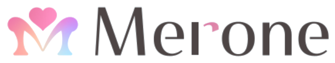

株式会社Merone・森川くみこのナーチャリングコンサル。掘り起こしは、その入り口にすぎません。売上が上がるプロセスなら、顧客への直接ヒアリングも、スタッフの指導も、チームのマインドの立て直しも、仕組み化も——結果が出るために、何だってやります。その全体像を、ひとつにまとめました。
数値はいずれも実際の支援先での実測値です。クライアント名・個人名は守秘のため伏せ、業種のみ記載しています。詳細な集計条件は、本文の各セクションに注記しています。
フレームワークの紹介では、顧客は動きません。人が動くまでの「心理の段差」を見つけて、そこだけを埋める——それが違いの源泉です。
| 論点 | 一般的なマーケコンサル | 森川くみこのナーチャリング |
|---|---|---|
| ゴール設定 | 顧客を動かす／コンバージョンさせる | 顧客が自分から動きたくなる環境をつくる |
| 使う枠組み | 4P・AIDA など一般論のあてはめ | その顧客固有の「動けない心理」を特定して撃つ |
| 数字の見方 | 先方指定の指標だけを最適化 | 渡された全データから、真のボトルネック（多くは"時間"）を疑う |
| 顧客の理解 | 既存データや想像で決める | 電話・Zoomで直接ヒアリングし、一次情報から組み直す |
| 緊急性の作り方 | 期限・先着・警告で煽る | 圧ゼロ・警告ゼロ。逃げ道（日程変更）を先に手渡す |
| 文章の単位 | テンプレの一斉配信 | 1通1アクション。一斉配信でも「個別連絡」の温度で届ける |
| 訴求の設計 | 全員に同じメッセージ | タイプ別（主導／分析／促進／支持）に言葉と支え方を分ける |
| 効果の証明 | 感覚・事例ベース | A/Bテストで実証（キャンセル率−14.9pt／回答率+10.8pt 等） |
テクニックではありません。この3つの力から、すべての配信文と設計が生まれています。
「30代女性」では止まりません。「夜22時、子どもを寝かしつけて、布団の中で目だけで読んでいる人」——読む人の指先と気持ち、画面の明るさまで想像します。だから生活に馴染む言葉が書けます。
「感想を送って」「キャンセルしないで」というお願いを、そのまま頼みません。顧客への贈り物に翻訳します。要求は心の壁を作り、贈り物は心を開く。同じ依頼が"自分のため"に変わった瞬間、人は動きます。
強い言葉・赤文字・カウントダウン・重複配信——普通は見えない「ミリ単位の圧」を見抜いて抜きます。人は"動かされている"と感じた瞬間に止まる。特に女性は、圧をかけるとYesがNoに反転します。
同じ依頼が、こう変わります。（ヒアリングシートのリマインド）
感覚の話ではありません。実際の支援先で計測した、代表的な変化です。
※ すべて実際の支援先の実測値です（守秘のため社名・個人名は伏せています）。「初速」「母数小」と付した項目は立ち上がり時点・少数サンプルの値、別途「試算」と明記した数値は実証値からの逆算です。実測と試算は分けて扱っています。
配信文はほんの一部です。売上が上がるプロセスなら、領域を選びません。実際にカバーしてきた範囲です。
推測でファネルは組みません。電話やZoomで顧客お一人おひとりに直接ヒアリングし、そのアンケートと生の声を読み解きます。そこで見えた"本当の詰まり"を根拠に、ファネルを組み直し、配信文を書き換えます。机上ではなく、一次情報から始めます。
結果が出るためなら、担当領域の外でも手を動かします。すべて、実際にあった話です。
先方の担当者が手一杯で、配信システムの画面を用意してもらうことすら難しかったとき。私が自分でログインし、45枚の画面と実際のやり取りまで確認して、シナリオ全体を把握し直しました。
架電やカスタマー対応の担当者の生の声（「無料と伝えているのに疑われる。返す言葉のテンプレが欲しい」など）を起点に、曖昧な返信用・お怒り案件用の対応マニュアルと返信テンプレ集を整備。連絡の引き継ぎ基準まで設計しました。
セールス数字の自動連携が、システム側の制限で全て止まったとき。原因を切り分け、別の経路を新しく通して恒久的に復旧。追加コストゼロで、4つの自動処理すべてを直しました。
クローザー一人ひとりの成約率と当事者意識を見て、「この人は絶対に残す」「この役割は見直す」まで提言。タイプ別の指導方針も用意しました。売上は結局、その場に立つ人で決まるからです。
広告から来たお客さまがフォームで止まっていた原因のひとつ、表示の不具合を私自身が修正しました。配信設計だけでなく、技術的な詰まりまで見つけて潰します。
部分最適では、つなぎ目からこぼれます。だから入口から出口まで、同じ設計思想で通します。
面談の成約は、座らせる"前"で決まります。だからナーチャリングは、ファネル全体の温度設計そのものです。
実際に1社の中で、顧客への定性ヒアリング → 広告の数値設計 → 競合を分解したLP → LINE内予約への構造転換 → 検定設計込みのA/B配信 → 会話ログ分析による面談トークの言語化 → クローザーの査定と指導 → キャンセル後フォローの自動化まで、連続してカバーしています。ここが「掘り起こしだけの外注」との決定的な違いです。
守秘のため社名は伏せ、業種で記載しています。数値はすべて実測値です。
※ 業種名はぼかしています。集計時期は主に直近半年〜1年、一部は立ち上がり初速・母数小の値を含みます（各カード内で明記）。
なぜ効くのか、きちんと説明できます。すべての原則に、裏づけがあります。
自由を奪われそうになると、人は逆の行動を取ります。だから「まだ完了していません！」でブロックが起き、「都合が悪ければ日程変更できますね」で逆に留まります。
人はもらった相手に返したくなります。催促すべき瞬間にこそ、価値（カルーセル・気づかいの一言）を贈る。追い立てるより、ずっと返ってきます。
「使わせて」は6割、「急いでいるので使わせて」は9割超が承諾する——理由がつくだけで人は協力します。依頼には必ず"なぜ"をセットにします。
一度に2つ以上頼むと、人は全部やめます。1通1アクション＋所要時間の明示でハードルを1/10に。小さなYESの積み重ねが、大きなYESに繋がります。
距離を縮める言葉と、敬意で保つ言葉を同時に効かせ、「個別連絡の温度」に着地させます。縮めるだけは馴れ馴れしく、保つだけは業務連絡。両立が技術です。
絵文字を全文に散らすと、感情の山が消えます。ピーク1点に絞り、最後の一言で印象を「楽しみ」に上書きする。読後感まで設計します。
お客さまは「数字」ではなく「一人の人間」だと思っています。その人の人生が良くなることを、自分の利益より先に考えています。無理やり動かすことが、心から苦手です。だから、追い立てません。
そして——結果が出るためなら、領域は選びません。配信文でも、スタッフの指導でも、仕組みづくりでも、経営数字の設計でも。売上が上がるプロセスなら、何だってやります。テクニックは真似できても、この姿勢だけは、代わりがききません。
顧客を追い立てず、自分から動きたくなる場をつくる。掘り起こしから、スタッフの育成、仕組み化、経営数字の設計まで。結果が出るために、私たちは何だってやります。まずは、いまのファネルと配信を見せてください。